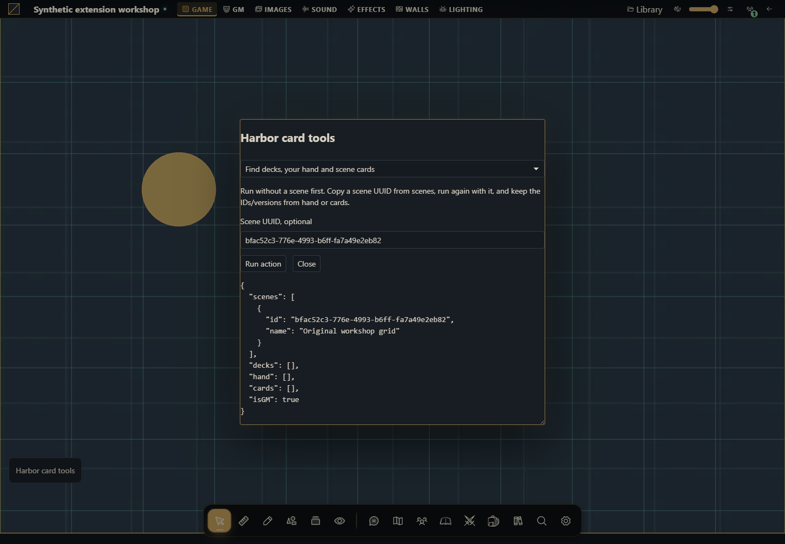

Como criar ferramentas de cartas e baralhos
Crie definições reutilizáveis, compre, revele, mova, transfira e reúna cartas com posse real.


O projeto que você vai criar
Crie Harbor card tools com cartas originais de sinalização. Escolha baralho só de nomes ou definição reutilizável com duas cartas e arte opcional de frente/verso. Compre para a mão, coloque/revele/mova na cena, recolha, entregue a outro membro, descarte/devolva e finalize com shuffle/reset/exclusão da instância.
Host alvo: Gravewright 0.3.0. As ações rodam somente quando você clica Run action; leituras e escritas usam a conta conectada. O painel de demonstração está em inglês. Cada receita abaixo informa os dados de entrada e o resultado concreto.
1. Crie os arquivos
Crie uma pasta cards. Salve os arquivos mostrados abaixo em UTF-8, ou baixe o projeto completo. manifest.json fica na raiz. Não há dependências npm nem build de JavaScript.
cards/
manifest.json
main.mjs
recipes.mjs
styles.css
LICENSE.txtUse campanha descartável, conta GM e conta de jogador. Colocar cartas exige cena; Inspect retorna IDs autorizados. GM cria definições/instâncias e gerencia baralhos. Jogador com leitura do baralho pode comprar para a própria mão e controlar suas cartas; conhecer UUID não concede controle.
2. Empacote, instale e ative
Partindo da pasta do projeto, execute no PowerShell:
python -m json.tool manifest.json
python -m zipfile -c ../cards-1.0.0.zip manifest.json main.mjs recipes.mjs styles.css LICENSE.txt
python -m zipfile -l ../cards-1.0.0.zipNo Linux/macOS, substitua python por python3 no mesmo comando. A listagem precisa mostrar manifest.json na raiz. Como proprietário, abra Inside → Módulos → Instalar módulo → Instalar de ZIP, selecione o ZIP e clique Instalar. Como GM, abra a campanha, use o botão Gravewright da mesa → Extensions e clique Activate na versão 1.0.0 de Harbor card tools. Feche o menu e clique no botão Harbor card tools. Se precisar de detalhes de cada tela, veja seu primeiro módulo.
O projeto fica inativo até a seleção na mesa. Teste uma extensão de demonstração por vez, pois seus botões usam a mesma posição. Para novos bytes, mude version para 1.0.1, gere outro ZIP, instale e ative essa versão; não edite o pacote instalado.
3. Execute cada receita
Encontre baralhos, sua mão e cartas da cena
Execute sem cena. Copie um UUID de scenes, execute com ele e use IDs/versões de hand ou cards.
async ({api,signal},values) => {
const maps = await api.maps.state({}, {signal});
const cards = await api.cards.state(values.sceneId ? {sceneId:values.sceneId} : {}, {signal});
return {scenes:maps.maps.map(row=>({id:row.id,name:row.name})),...cards};
}Resultado esperado: Baralhos autorizados, mão desta conta e cartas na cena escolhida. Faces privadas continuam filtradas.
Como conferir: Compare destinatário e outra conta. A contagem do baralho não revela imagens ocultas.
Crie um baralho apenas com nomes
Execute uma vez como GM. Este caminho cria uma instância diretamente, sem imagens ou definição reutilizável. Copie id como UUID do baralho.
async ({api,signal}) => {
return api.cards.create({name:"Harbor signals",cards:["Blue lantern","Return to harbor","Hold position"]}, {signal});
}Resultado esperado: Instância com três cartas. Outra execução explícita cria outro baralho.
Como conferir: Confira draw_count 3 e a lista nativa de baralhos.
Defina e instancie um baralho com arte opcional
Escolha imagens originais PNG/JPEG/WebP ou deixe ambos vazios. O host recebe File reais, define duas cartas e cria uma instância. Guarde deckDefinitionId para instanciar outra cópia pelo mesmo método público.
async ({api,host,signal},values) => {
const front = values.front ? await host.call("card.asset.upload", {purpose:"card_front",file:values.front}, {signal}) : null;
const back = values.back ? await host.call("card.asset.upload", {purpose:"card_back",file:values.back}, {signal}) : null;
const definition = await api.cards.define({name:"Reusable harbor signals",default_back_asset_id:back?.assetId ?? null,cards:[
{name:"Blue lantern",front_asset_id:front?.assetId ?? null},
{name:"Hold position",front_asset_id:front?.assetId ?? null},
]}, {signal});
const instance = await api.cards.instantiate({deck_definition_id:definition.deck.id}, {signal});
return {deckDefinitionId:definition.deck.id,deckId:instance.id};
}Resultado esperado: Definição reutilizável e instância separada com duas cartas. Imagens pertencem à campanha/usuário e são referenciadas por assetId.
Como conferir: Compre uma carta e compare mão privada com cena revelada. Limites: 10 MiB e 16 megapixels; o servidor converte imagens válidas para WebP.
Encontre o destinatário de uma transferência
Use com lobby/ready-check habilitado. Copie userId de um membro para Draw recipient ou Give. Se desabilitado, use UUID autorizado de sua fixture controlada; não invente IDs.
async ({api,signal}) => {
const lobby = await api.table.lobby({signal});
return lobby.members.map(row=>({userId:row.user_id,name:row.name,role:row.role}));
}Resultado esperado: IDs e nomes dos membros atuais, sem credenciais.
Como conferir: Transfira para participante real. UUID de outra campanha deve falhar.
Compre cartas para um destino real
Use UUID de instância, count 1 e destination hand primeiro. Scene/table exigem cena. Chat publica um evento de cartas e descarta as compradas; escolha quando esse for o efeito desejado. Só GM define outro destinatário.
async ({api,signal},values) => {
return api.cards.draw({deck_instance_id:values.deckId,count:values.count,destination:values.destination,
...(values.sceneId ? {sceneId:values.sceneId} : {}),...(values.recipient ? {recipient:values.recipient} : {}),
face_state:"face_up",x:140,y:140}, {signal});
}Resultado esperado: A quantidade sai da pilha para o destino solicitado. Compra para mão continua privada ao dono.
Como conferir: Confira draw_count e hand/cards como destinatário; cartas insuficientes causam erro, sem compra parcial.
Jogue, mova, revele e transfira uma carta controlada
Após Draw para sua mão, cole UUID da carta e da cena. Execute place, move, flip e take separadamente. Give exige destinatário real; passe à conta dele para continuar. Discard envia ao descarte; return devolve à pilha.
async ({api,signal},values) => {
const state = await api.cards.state(values.sceneId ? {sceneId:values.sceneId} : {}, {signal});
const card = [...state.hand,...state.cards].find(row=>row.id===values.id);
if (!card?.canControl) throw Object.assign(new Error("Card is not controllable in this view"),{code:"permission_denied"});
const payload = {id:card.id,version:card.version};
switch (values.action) {
case "place": return api.cards.place({...payload,sceneId:values.sceneId,x:values.x,y:values.y,reveal:true,scale:1,z_index:0}, {signal});
case "move": return api.cards.move({...payload,x:values.x,y:values.y,rotation:45,scale:1,z_index:1}, {signal});
case "flip": return api.cards.flip(payload, {signal});
case "take": return api.cards.take(payload, {signal});
case "give": return api.cards.give({...payload,recipient:values.recipient}, {signal});
case "discard": return api.cards.discard(payload, {signal});
case "return": return api.cards.return(payload, {signal});
default: throw new Error("Choose a documented card action");
}
}Resultado esperado: Cada clique lê a versão atual e aplica uma ação. Move exige carta na cena; posse e visibilidade da face continuam no servidor.
Como conferir: Acompanhe mão → cena → mão → outro participante; depois descarte/devolva uma carta controlada. Releia estado a cada ação. Outro jogador não controla sua mão.
Embaralhe, reúna ou exclua o baralho de teste
Como GM, use UUID de instância. Shuffle embaralha a pilha; reset reúne cartas, limpa donos/cenas/faces e embaralha; deleteDeck remove a instância.
async ({api,signal},values) => {
const deck = (await api.cards.state({}, {signal})).decks.find(row=>row.id===values.deckId);
if (!deck) throw new Error("Deck unavailable");
const payload={deck_instance_id:deck.id,version:deck.version};
switch(values.action) {
case "shuffle": return api.cards.shuffle(payload, {signal});
case "reset": return api.cards.reset(payload, {signal});
case "deleteDeck": return api.cards.deleteDeck(payload, {signal});
default: throw new Error("Choose shuffle, reset or deleteDeck");
}
}Resultado esperado: Operação de baralho com versão. Definições e imagens reutilizáveis têm ciclo próprio.
Como conferir: Compre/descarte, execute reset e confira toda a pilha. Exclua apenas o baralho descartável e confira sua remoção.
4. Entenda e adapte os arquivos completos
main.mjs desenha apenas o lançador e o formulário. recipes.mjs contém as ações: para adaptar o comportamento, altere a função run da receita desejada, mantendo sua assinatura. O formulário passa tipos reais (number, boolean e File), bloqueia requisições simultâneas e desenha resultados com textContent. Não há avaliação de código fornecido pelo usuário. api, host, assets e storage pertencem à montagem; signal cancela trabalho ao desativar. O modal não fecha durante uma operação pendente e é liberado ao abortar a montagem. A função de negócio continua responsável por revisões, permissões e sequência transacional.
manifest.json
{
"id": "tutorial.cards",
"name": "Harbor card tools",
"version": "1.0.0",
"sdk": {
"requires": ">=1.0.0 <2.0.0",
"tested": "1.0.0"
},
"entry": "main.mjs",
"description": "Create reusable deck definitions, draw, reveal, move, transfer and recover cards with real ownership.",
"author": "Gravewright documentation",
"license": "MIT"
}main.mjs
import {recipes} from './recipes.mjs';
export default {
start({styles}) { styles.use('styles.css'); },
register({register}) {
register("table.interface", ({root,api,host,assets,storage,context,events,viewport,signal,onDispose}) => {
const doc=root.ownerDocument;
const button=doc.createElement('button');
button.type='button';button.className='tutorial-launcher';
button.textContent="Harbor card tools";
root.append(button);
for(const type of ['pointerdown','mousedown'])button.addEventListener(type,event=>event.stopPropagation(),{signal});
let modal,pending=false;
button.addEventListener('click',event=>{
event.stopPropagation();
if(modal?.isConnected) { modal.focus();return; }
const panel=doc.createElement('section');
panel.className="tutorial-workbench-cards";
panel.setAttribute('role','dialog');panel.setAttribute('aria-modal','true');
panel.setAttribute('aria-label',button.textContent);panel.tabIndex=-1;
const title=doc.createElement('h2');title.textContent=button.textContent;panel.append(title);
const choose=doc.createElement('select');choose.setAttribute('aria-label','Action');
for(const recipe of recipes) {
const option=doc.createElement('option');option.value=recipe.id;option.textContent=recipe.label;choose.append(option);
}
const form=doc.createElement('form'),fields=doc.createElement('div');
const description=doc.createElement('p');
const run=doc.createElement('button');run.type='submit';run.textContent='Run action';
const close=doc.createElement('button');close.type='button';close.textContent='Close';
const output=doc.createElement('pre');output.setAttribute('role','status');output.setAttribute('aria-live','polite');
form.append(description,fields,run,close,output);panel.append(choose,form);
function renderFields(){
const recipe=recipes.find(item=>item.id===choose.value);fields.replaceChildren();
description.textContent=recipe.description;
for(const field of recipe.fields||[]) {
const label=doc.createElement('label');label.textContent=field.label;
const input=doc.createElement('input');input.name=field.name;input.type=field.type||'text';
if(field.type==='number')input.step=String(field.step??'any');
if(field.type==='checkbox')input.checked=!!field.value;
else if(field.type!=='file')input.value=String(field.value??'');
input.required=!!field.required;
if(field.accept)input.accept=field.accept;
label.append(input);fields.append(label);
}
output.textContent='';
}
choose.addEventListener('change',renderFields,{signal});renderFields();
form.addEventListener('submit',async event=>{
event.preventDefault();if(pending)return;
const recipe=recipes.find(item=>item.id===choose.value),values={};
for(const input of fields.querySelectorAll('input')) {
values[input.name]=input.type==='file'?input.files[0]:input.type==='checkbox'?input.checked:input.type==='number'?Number(input.value):input.value;
}
pending=true;choose.disabled=true;run.disabled=true;close.disabled=true;
for(const input of fields.querySelectorAll('input'))input.disabled=true;
output.textContent='Running…';
try {
const value=await recipe.run({api,host,assets,storage,context,events,viewport,signal,onDispose},values);
if(!signal.aborted)output.textContent=typeof value==='string'?value:JSON.stringify(value??null,null,2);
} catch(error) {
if(!signal.aborted)output.textContent=String(error.code||error.message||'unavailable');
} finally {
pending=false;
if(!signal.aborted){choose.disabled=false;run.disabled=false;close.disabled=false;for(const input of fields.querySelectorAll('input'))input.disabled=false;}
}
},{signal});
close.addEventListener('click',()=>void modal.close(),{signal});
modal=api.ui.openModal(panel,{canClose:()=>!pending||signal.aborted});
},{signal});
onDispose(()=>{button.remove();if(modal)void modal.close();});
});
},
stop() {}
};recipes.mjs
export const recipes=[
{
id:"inspect",
label:"Find decks, your hand and scene cards",
description:"Run without a scene first. Copy a scene UUID from scenes, run again with it, and keep the IDs/versions from hand or cards.",
fields:[
{
"name": "sceneId",
"label": "Scene UUID, optional",
"value": "",
"type": "text",
"required": false
}
],
run:async ({api,signal},values) => {
const maps = await api.maps.state({}, {signal});
const cards = await api.cards.state(values.sceneId ? {sceneId:values.sceneId} : {}, {signal});
return {scenes:maps.maps.map(row=>({id:row.id,name:row.name})),...cards};
}
},
{
id:"create",
label:"Create a text-only deck",
description:"Run once as GM. This route creates an instance directly, without image assets or a reusable definition. Copy id as your deck UUID.",
fields:[],
run:async ({api,signal}) => {
return api.cards.create({name:"Harbor signals",cards:["Blue lantern","Return to harbor","Hold position"]}, {signal});
}
},
{
id:"define",
label:"Define and instantiate a deck with optional artwork",
description:"Choose original PNG/JPEG/WebP images or leave both files empty. The host uploads real File objects, defines two cards and creates an instance. Keep deckDefinitionId to instantiate another copy with the same public method.",
fields:[
{
"name": "front",
"label": "Optional original front image",
"value": "",
"type": "file",
"required": false
},
{
"name": "back",
"label": "Optional original back image",
"value": "",
"type": "file",
"required": false
}
],
run:async ({api,host,signal},values) => {
const front = values.front ? await host.call("card.asset.upload", {purpose:"card_front",file:values.front}, {signal}) : null;
const back = values.back ? await host.call("card.asset.upload", {purpose:"card_back",file:values.back}, {signal}) : null;
const definition = await api.cards.define({name:"Reusable harbor signals",default_back_asset_id:back?.assetId ?? null,cards:[
{name:"Blue lantern",front_asset_id:front?.assetId ?? null},
{name:"Hold position",front_asset_id:front?.assetId ?? null},
]}, {signal});
const instance = await api.cards.instantiate({deck_definition_id:definition.deck.id}, {signal});
return {deckDefinitionId:definition.deck.id,deckId:instance.id};
}
},
{
id:"members",
label:"Find a recipient for a transfer",
description:"Use this if the host has the ready-check/lobby feature enabled. Copy a real member userId for Draw recipient or Give. If disabled, obtain the authorized member UUID from your controlled test fixture; do not guess IDs.",
fields:[],
run:async ({api,signal}) => {
const lobby = await api.table.lobby({signal});
return lobby.members.map(row=>({userId:row.user_id,name:row.name,role:row.role}));
}
},
{
id:"draw",
label:"Draw cards into a real destination",
description:"Use a deck instance UUID, count 1 and destination hand for the first run. scene/table need a scene UUID. chat deliberately publishes a card event and discards the drawn cards; use it only when that is the intended action. Only GM can choose another recipient.",
fields:[
{
"name": "deckId",
"label": "Deck instance UUID",
"value": "",
"type": "text",
"required": true
},
{
"name": "count",
"label": "Count",
"value": 1,
"type": "number",
"required": true
},
{
"name": "destination",
"label": "Destination: hand, scene, table or chat",
"value": "hand",
"type": "text",
"required": true
},
{
"name": "sceneId",
"label": "Scene UUID for scene/table",
"value": "",
"type": "text",
"required": false
},
{
"name": "recipient",
"label": "Recipient UUID, blank for yourself",
"value": "",
"type": "text",
"required": false
}
],
run:async ({api,signal},values) => {
return api.cards.draw({deck_instance_id:values.deckId,count:values.count,destination:values.destination,
...(values.sceneId ? {sceneId:values.sceneId} : {}),...(values.recipient ? {recipient:values.recipient} : {}),
face_state:"face_up",x:140,y:140}, {signal});
}
},
{
id:"card-actions",
label:"Play, move, reveal and transfer a controlled card",
description:"After Draw to your hand, paste its card UUID and a scene UUID. Run place, then move, flip and take one at a time. Give needs a real recipient; switch to that account to continue. Discard sends to discard; return sends back to draw.",
fields:[
{
"name": "id",
"label": "Controlled card UUID",
"value": "",
"type": "text",
"required": true
},
{
"name": "action",
"label": "Action: place, move, flip, take, give, discard or return",
"value": "place",
"type": "text",
"required": true
},
{
"name": "sceneId",
"label": "Scene UUID, needed for scene cards",
"value": "",
"type": "text",
"required": false
},
{
"name": "recipient",
"label": "Recipient UUID for give",
"value": "",
"type": "text",
"required": false
},
{
"name": "x",
"label": "Scene x",
"value": 140,
"type": "number",
"required": true
},
{
"name": "y",
"label": "Scene y",
"value": 140,
"type": "number",
"required": true
}
],
run:async ({api,signal},values) => {
const state = await api.cards.state(values.sceneId ? {sceneId:values.sceneId} : {}, {signal});
const card = [...state.hand,...state.cards].find(row=>row.id===values.id);
if (!card?.canControl) throw Object.assign(new Error("Card is not controllable in this view"),{code:"permission_denied"});
const payload = {id:card.id,version:card.version};
switch (values.action) {
case "place": return api.cards.place({...payload,sceneId:values.sceneId,x:values.x,y:values.y,reveal:true,scale:1,z_index:0}, {signal});
case "move": return api.cards.move({...payload,x:values.x,y:values.y,rotation:45,scale:1,z_index:1}, {signal});
case "flip": return api.cards.flip(payload, {signal});
case "take": return api.cards.take(payload, {signal});
case "give": return api.cards.give({...payload,recipient:values.recipient}, {signal});
case "discard": return api.cards.discard(payload, {signal});
case "return": return api.cards.return(payload, {signal});
default: throw new Error("Choose a documented card action");
}
}
},
{
id:"deck-actions",
label:"Shuffle, gather or delete the test deck",
description:"As GM use the instance UUID. shuffle randomizes the draw pile; reset gathers all cards, clears owners/scenes/faces and shuffles; deleteDeck removes the instance.",
fields:[
{
"name": "deckId",
"label": "Deck instance UUID",
"value": "",
"type": "text",
"required": true
},
{
"name": "action",
"label": "Action: shuffle, reset or deleteDeck",
"value": "shuffle",
"type": "text",
"required": true
}
],
run:async ({api,signal},values) => {
const deck = (await api.cards.state({}, {signal})).decks.find(row=>row.id===values.deckId);
if (!deck) throw new Error("Deck unavailable");
const payload={deck_instance_id:deck.id,version:deck.version};
switch(values.action) {
case "shuffle": return api.cards.shuffle(payload, {signal});
case "reset": return api.cards.reset(payload, {signal});
case "deleteDeck": return api.cards.deleteDeck(payload, {signal});
default: throw new Error("Choose shuffle, reset or deleteDeck");
}
}
}
];styles.css
.gw-module-root[data-module-id="tutorial.cards"] .tutorial-launcher { position: fixed; left: 16px; bottom: 112px; z-index: 10; padding: var(--space-3); border: 1px solid var(--border); border-radius: var(--radius-md); background: var(--surface); color: var(--text); font-size: 14px; pointer-events: auto; max-width: min(440px, calc(100vw - 32px)); white-space: normal; }
.tutorial-workbench-cards { width: min(640px, calc(100vw - 48px)); padding: var(--space-5); font-size: 14px; }
.tutorial-workbench-cards label { display: block; margin: var(--space-3) 0; }
.tutorial-workbench-cards input, .tutorial-workbench-cards select { display: block; width: 100%; margin-top: var(--space-2); }
.tutorial-workbench-cards pre { max-height: 360px; max-width: 100%; overflow: auto; white-space: pre-wrap; overflow-wrap: anywhere; }
.tutorial-workbench-cards button { margin-right: var(--space-3); }LICENSE.txt
MIT License
Copyright (c) 2026 Gravewright contributors
Permission is hereby granted, free of charge, to any person obtaining a copy
of this software and associated documentation files (the "Software"), to deal
in the Software without restriction, including without limitation the rights
to use, copy, modify, merge, publish, distribute, sublicense, and/or sell
copies of the Software, and to permit persons to whom the Software is
furnished to do so, subject to the following conditions:
The above copyright notice and this permission notice shall be included in all
copies or substantial portions of the Software.
THE SOFTWARE IS PROVIDED "AS IS", WITHOUT WARRANTY OF ANY KIND, EXPRESS OR
IMPLIED, INCLUDING BUT NOT LIMITED TO THE WARRANTIES OF MERCHANTABILITY,
FITNESS FOR A PARTICULAR PURPOSE AND NONINFRINGEMENT. IN NO EVENT SHALL THE
AUTHORS OR COPYRIGHT HOLDERS BE LIABLE FOR ANY CLAIM, DAMAGES OR OTHER
LIABILITY, WHETHER IN AN ACTION OF CONTRACT, TORT OR OTHERWISE, ARISING FROM,
OUT OF OR IN CONNECTION WITH THE SOFTWARE OR THE USE OR OTHER DEALINGS IN THE
SOFTWARE.5. Permissões, falhas e teste final
Siga as receitas e releia estado a cada clique. A definição gera instância com duas cartas; criação direta gera três nomes. Compare contas antes/depois de Give. Teste faces privadas, cartas viradas para baixo, posse errada, versões antigas e cartas insuficientes. Ação de carta verifica versão da carta; shuffle/reset/excluir verifica versão do baralho; Draw é compra nativa serializada. Cada Draw confirmado compra outra carta; criar não é atualizar lista. Após resultado desconhecido, inspecione estado antes de repetir. Upload pode ter confirmado mesmo que define posterior falhe; use só arte original descartável.
Como usar a IA para estender este projeto
Adapte tutorial-cards para [baralho original]. Confira cards/services.py e schemas card.asset.upload. Preserve IDs de instância/definição, revisões, File, posse e visibilidade das faces. Não exponha mão de outro jogador nem faces privadas em logs. Entregue pacote completo e testes em duas contas para draw/place/give/reset.